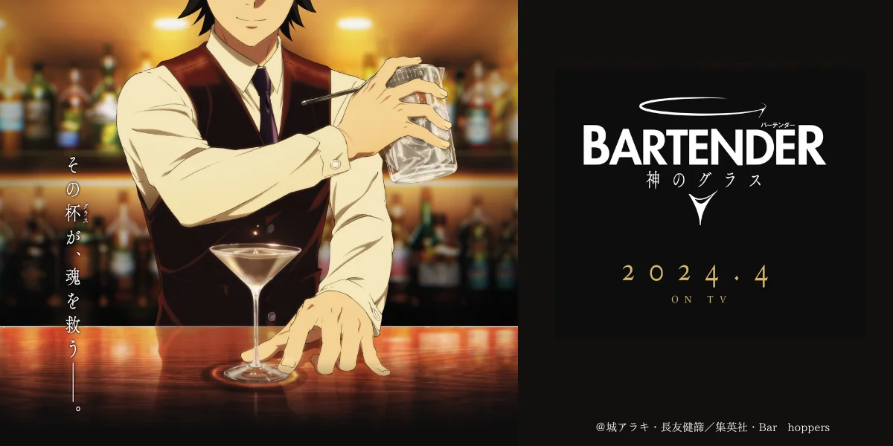

私のおすすめ今期アニメ
「バーテンダー 神のグラス」
今回は、今期アニメ「バーテンダー 神のグラス」についてご紹介します！

- あらすじ
- バーテンダー・佐々倉溜は六本木で修行後に単身フランスへ渡り、 ヨーロッパのカクテルコンテストにて優勝。 それ以降、彼が作るカクテルは「神のグラス」と呼ばれるようになる。 パリの一流ホテルにてチーフバーテンダーを務めていた溜だったが、 理由は不明ながら日本に帰国し、プライベート・バー“イーデンホー ル”で働き始める。 バーにやってくるお客さんの様々な悩みや問題に対して、特別な一杯を提供する溜。 一方、東京に開業したホテル・カーディナルでは、 オーナーの来島泰三がカウンターバーに立つバーテンダーの人選に拘り、 相応しいバーテンダーが見つからずオープン出来ずにいる。 泰三の孫・美和を含む営業企画部のメンバーはバーテンダー探しに奔走。 佐々倉に出会い、彼こそが相応しいとスカウトするが、はぐらかされてばかり・・・。 はたして、カーディナルのカウンターバーはオープンできるのか、溜の決断とは・・・。
私の評価（独断）
| 面白さ | 2.7/5.0 |
|---|---|
| 描写 | 4.3/5.0 |
| ストーリー | 3.8/5.0 |
| 合計 | 3.6/5.0 |
全体的な評価としては3.6とやや高いと評価しています。面白さを求めた作品というよりも、カクテルを作る際の描写や各登場人物のストーリーが重視されているアニメだと感じました。